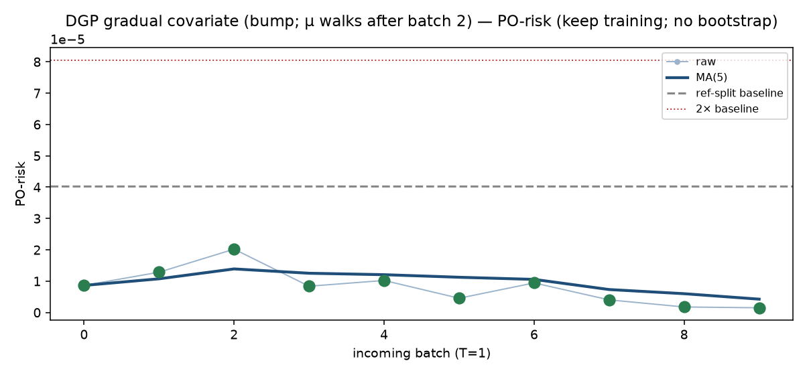

DGP gradual covariate (bump; μ walks after batch 2). n_ref=10000, n_new=2000, hidden=[64, 32].
看板的输出就是：该冻结哪一层的 training（仅当 PO 和 MSE 都崩）。
PO-risk 用 RF，不该突然崩；更可能先崩的是 serving MSE。
MSE 崩了但 PO 正常 → 不是 concept drift。MMD 口径是 MMD²(X_new, X_ref)，
跟 reference batch 比，不是跟历史所有 batch 的 pairwise 均值，也不是上个 batch 的层 representation。
闭环：OnlineRFPerm 冻参考窗 RF，T=MSE−E_ref，last-two hop 标 shift-onset（onset_hat=None，labeled=2）。
看板说这是哪种 shift。PO 崩了模型没崩 → 再观察，先不冻。
两都崩 → 开 freeze-depth，model_i 只训 top i。
不做 online-bootstrap。
不冻任何一层的 training — 接着 train


| t | PO-risk | PO MA | MSE | MSE MA | MMD vs ref | MMD MA | RFPerm T | hop | action | 冻结哪一层的 training |
|---|---|---|---|---|---|---|---|---|---|---|
| 0 | 8.644e-06 | 8.644e-06 | 0.1993 | 0.1993 | -0.0003176 | -0.0003176 | 0.009242 | keep training | 不冻任何一层的 training | |
| 1 | 1.286e-05 | 1.075e-05 | 0.1944 | 0.1968 | 0.000667 | 0.0001747 | 0.00349 | keep training | 不冻任何一层的 training | |
| 2 | 2.021e-05 | 1.391e-05 | 0.1898 | 0.1945 | 0.005401 | 0.001917 | 0.0004261 | keep training | 不冻任何一层的 training | |
| 3 | 8.388e-06 | 1.253e-05 | 0.1777 | 0.1903 | 0.02206 | 0.006954 | -0.01287 | keep training | 不冻任何一层的 training | |
| 4 | 1.023e-05 | 1.207e-05 | 0.1564 | 0.1835 | 0.06772 | 0.01911 | -0.02884 | keep training | 不冻任何一层的 training | |
| 5 | 4.554e-06 | 1.125e-05 | 0.1329 | 0.1702 | 0.125 | 0.04417 | -0.05312 | keep training | 不冻任何一层的 training | |
| 6 | 9.44e-06 | 1.056e-05 | 0.0926 | 0.1499 | 0.1982 | 0.08368 | -0.08945 | keep training | 不冻任何一层的 training | |
| 7 | 4.031e-06 | 7.328e-06 | 0.07458 | 0.1268 | 0.2407 | 0.1307 | -0.1081 | keep training | 不冻任何一层的 training | |
| 8 | 1.764e-06 | 6.003e-06 | 0.05136 | 0.1016 | 0.3157 | 0.1895 | -0.1341 | keep training | 不冻任何一层的 training | |
| 9 | 1.509e-06 | 4.26e-06 | 0.02826 | 0.07594 | 0.3968 | 0.2553 | -0.1556 | keep training | 不冻任何一层的 training |